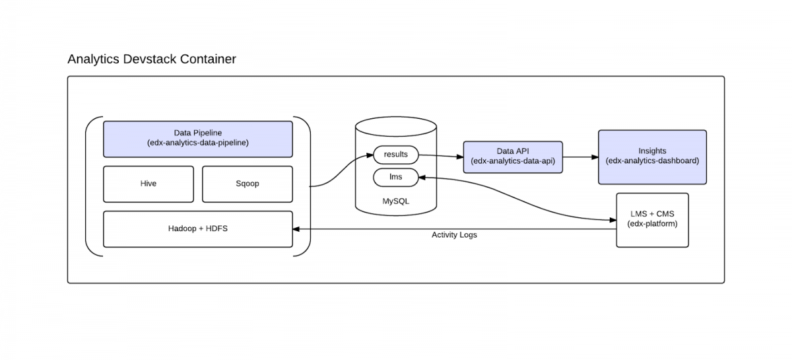

Gabe Mulley上周在open.edx.org里公布说Development Environment for Insights已经可用了，原文参考这里
文章说这项成果要大大地感谢Philippe Chiu (来自法国IONISx公司)，以及Braden MacDonald (来自OpenCraft公司),前者在去年的黑客马拉松里贡献了最初的模型（跑在Docker里），我之前好像有拿到这个版本，但似乎略微杂乱。后者给出了vagrant image
下图是analytics devstack包含的服务流程图

据我所知，这项工作Gabe Mulley自己是做了很多工作的，我一直有跟进这块，大家在google group里谈论数据可视化这块时，Gabe Mulley一直致力于为大家解答，在edX开发者中，他对数据这部分似乎也最为熟悉
目前这部分还没有十分成熟，问题包括一些s3的依赖还没有清理干净。但这些问题正在被解决
可喜的是，之后很可能可以直接将数据分析整合到生产环境里（有望在下个稳定版本），不需要依赖于亚马逊的服务，意味着国内可以直接使用。
安装
首先和devstack一样，需要安装 VirtualBox >= 4.3.12 和 Vagrant >= 1.6.5,没有安装devstack经验的同学，可以参考installing-the-edx-developer-stack
#在宿主机(host)
sudo apt-get install python-dev
git clone https://github.com/edx/edx-analytics-pipeline
cd edx-analytics-pipeline
virtualenv venv
source venv/bin/activate
make bootstrap
mkdir analyticstack
cd analyticstack
curl -L https://raw.github.com/edx/configuration/master/vagrant/release/analyticstack/Vagrantfile > Vagrantfile
vagrant plugin install vagrant-vbguest
sudo apt-get install nfs-kernel-server nfs-common portmap
vagrant up
使用
#进入Analytics Devstack
vagrant ssh
#切换到edxapp用户
sudo su edxapp
#启用edX Analytics Data API
sudo su analytics_api
~/venvs/analytics_api/bin/python ~/analytics_api/manage.py runserver 0.0.0.0:8100 --insecure
#运行edX Insights
sudo su insights
~/venvs/insights/bin/python ~/edx_analytics_dashboard/manage.py switch display_verified_enrollment on --create
~/venvs/insights/bin/python ~/edx_analytics_dashboard/manage.py switch enable_course_api on --create
~/venvs/insights/bin/python ~/edx_analytics_dashboard/manage.py runserver 0.0.0.0:8110 --insecure
用浏览器打开：http://127.0.0.1:8110
执行数据分析任务(edX Analytics Pipeline)
- vagrant ssh进入devstack，注册用户，注册课程
- 开始学习，回答几道课程中的问题
- 退出devstack，回到宿主机，进入edx-analytics-pipeline目录
- 执行任务
- 统计注册信息：
- export WHEEL_URL=http://edx-wheelhouse.s3-website-us-east-1.amazonaws.com/Ubuntu/precise
- remote-task --vagrant-path
analyticstack> --remote-name devstack --override-config ${PWD}/config/devstack.cfg --wheel-url $WHEEL_URL --wait \ ImportEnrollmentsIntoMysql --local-scheduler --interval-end $(date +%Y-%m-%d -d "tomorrow") --n-reduce-tasks 1 - 统计答案分布：
- export WHEEL_URL=http://edx-wheelhouse.s3-website-us-east-1.amazonaws.com/Ubuntu/precise
- export UNIQUE_NAME=$(date +%Y-%m-%dT%H_%M_%SZ)
- remote-task --vagrant-path
analyticstack> --remote-name devstack --override-config \({PWD}/config/devstack.cfg --wheel-url $WHEEL_URL --wait \ AnswerDistributionWorkflow --local-scheduler \ --src hdfs://localhost:9000/data/ \ --include '*tracking.log*' \ --dest hdfs://localhost:9000/edx-analytics-pipeline/output/answer_distribution_raw/\)UNIQUE_NAME/data \
--name \(UNIQUE_NAME \ --output-root hdfs://localhost:9000/edx-analytics-pipeline/output/answer_distribution/ \ --marker hdfs://localhost:9000/edx-analytics-pipeline/output/answer_distribution_raw/\)UNIQUE_NAME/marker \
--n-reduce-tasks 1
- 统计注册信息：